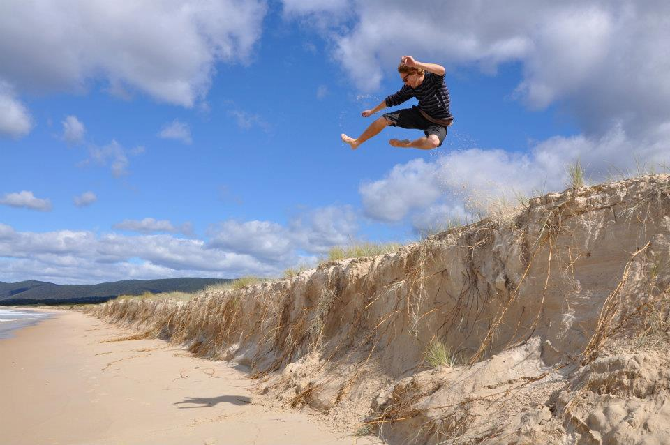
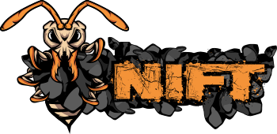

Nicholas Ham
This is the personal site of Nicholas Ham. I hold a doctorate in mathematics from the University of Tasmania, which I did having the advisors of Desmond FitzGerald and Peter Jarvis (Google Scholar).

On top of completing a mathematics major during undergrad, I also completed majors in analytical economics and applied computing. Furthermore I contributed to designing and building an international programming competition sponsored by Google, and have experience teaching both mathematics and economics classes at the undergraduate level.
I'm the creator and developer of a website generator called Nift which seems to benchmark as the world's fastest, though more people are encouraged to run and release their own benchmarks, you can even use Nift to make a website for the benchmarks.

I also, at least independently, combined the terms

The Nift code of etiquette and piracy history/background page on this website might help get you started. Unfortunately many facets of society are often stuck having to blindly follow orders due to how people victim to having to play along for abusers are treated otherwise, so people need to find other ways to help turn these problems around globally.
Thankfully when I went through the claim was all PhD theses had to be examined externally and am reasonably confident mine was, at least the corrections asked for were mostly quite reasoanble and dug quite far in to various aspects, though be weary of anyone claiming they contributed to that. Also be weary of people graduating by publication, it is one method being used for things like affirmative action and typically requires less input externally about the candidate properly reaching the doctorate level on something and being competent and knowing what they are and are not competent at etc., similar goes for places overrun by abusers and affirmative action which are able to graduate people to then go on to powerful positions who knowingly or unknowingly contribute to people being stuck victim to playing along for abusers.

Mirrors: [Official] [BitBucket] [GitHub] [GitLab] [Netlify] [Vercel]
Page was last built using Nift on Monday April 05 2021 at 19:45:55 (AEST).